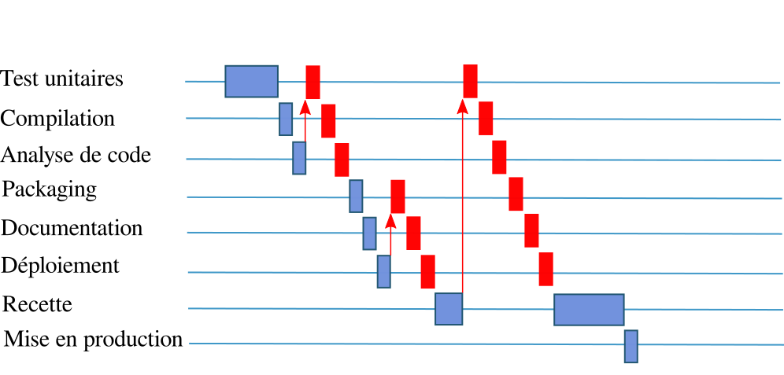
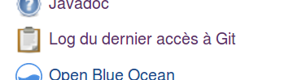
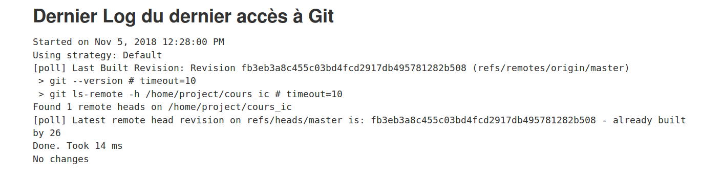
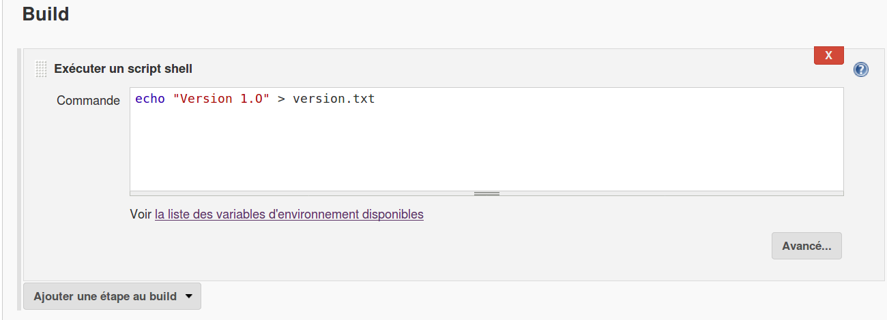
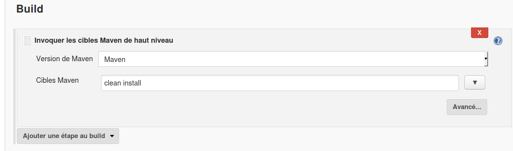
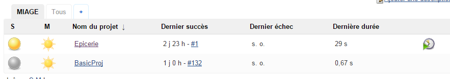
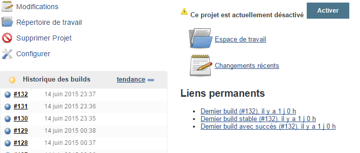
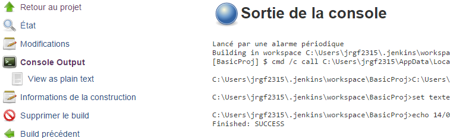

Intégration continue
Intégration continue S. Fauvel – Univ. Nantes 2022
Plan
Intégration
Intégration continue
Jenkins
Intégration
Entre le développement et la production ?
On appelle "intégration" tout ce qu’il reste à faire à une équipe projet, quand le travail de développement à proprement parler est terminé, pour obtenir un produit exploitable, "prêt à l’emploi".
Planning
Intégration
Planning
Planning
En pratique
Charge
 |
Les étapes à repasser sont une charge de travail supplémentaire
Temps
Chaque étape à refaire allonge le délai de livraison
Feedback
Le temps d’intégration éloigne d’autant le délai entre le développement et sa validation
Incertitude
1 constat
L’intégration est une phase compliquée
C’est une étape incertaine
Il faut prévoir une charge de travail
Intégration dans un cycle en V
Le moins souvent possible
1 seul grande intégration
Estimer et planifier la phase d’intégration
Prévoir pour limiter les risques
Intégration dans une approche Agile
Le plus souvent possible
De nombreuses petites intégrations
Incorporer cette phase au développement
Avoir une feedback au plus tôt
Intégration continue
Origine
Grady Booch - Object Oriented Design: With Applications, 1991
Kent Beck - Extreme Programming Explained, 1999
Diminuer les risques de conflit
Détecter les défauts au plus tôt
Avoir un logiciel opérationnel en permanence
Martin Fowler - Continuous Integration, 2000
Intégration continue
Automatiser la chaîne de build pour faire l’intégration de manière transparente
Bonnes pratiques
Commiter régulièrement du code fonctionnel
L’intégration continue s’appuie sur le code commité
L’application doit compiler et les tests passer
Avoir des tests automatiser pour détecter les anomalies
Corriger les builds en échec
Optimiser les temps de builds pour améliorer le feedback
Bénéfices
Réduction des risques lié à l’incertitude
Etat du projet connu en permanence
Dernière version stable identifiée
Réduction des tâches répétitives
Gain de temps pour les équipes
Réduction des délais pour l’intégration
Impose des bonnes pratiques
Oblige une rigueur de travail
Assure la reproductibilité
Définitions
Continuous Integration: Vérifie l’intégration
Continuous Delivery: Prêt à être mis en production
Continuous Deployment: Mise en production
Outils
Jenkins
TeamCity
Travis
Gitlab CI
GitHub Actions
…
Jenkins

Jenkins
Serveur d’intégration continue open source
Gère et contrôle les tâches du cycle de vie d’un logiciel:
Compilation
Documentation
Tests
Packaging
analyse de code
…
Extensible en ajoutant des plugins
Jenkins - installation
Serveur Web, un simple war
Lancement :
java -jar jenkins.warAccès:
http://localhost:8080Jenkins - jobs
Un job est une configuration pour l’intégration d’un projet
Un projet peut avoir plusieurs jobs
Le lancement d’un job exécute les instructions décrites dans sa configuration
Jenkins – Tableau de bord
Jenkins – Statut du job
Succès | Tout fonctionne | |
En échec | La construction n’a pas pu se faire (compilation, …) | |
Instable | La build a abouti mais des tests échouent | |
Désactivé | Le job est désactivé |
Jenkins - jobs
Plusieurs types de jobs
Free-style : accès à toutes les options disponibles
Maven : basé sur une configuration Maven
Multi-configuration : projets complexes avec plusieurs builds
Job externe : monitoring de processus externe
Pipeline : définition du processus d’intégration/déploiement sous forme de script
Jenkins - jobs
Général
Gestion de code source
Ce qui déclenche le build
Environnement de Build
Build
Actions à la suite du build
Général
Paramètres du build
Supprimer les anciens build
…
Gestion de code source
Gestion de code source
Récupération dans un espace dédié
Construction de l’application dans cet espace
Ce qui déclenche le build
Jenkins - déclenchement
Planification:
Construire périodiquement
Scruter la gestion de configuration
La syntaxe est celle du Cron
[MINUTES] [HEURES] [JOURMOIS] [MOIS] [JOURSEMAINE]
'*' représente l’ensemble des valeurs possibles
'N' déclenche lorsque la valeur vaut N
'*/X' déclenche tous les X
Exemple:
toutes les 5 minutes: */5 * * * *
A 23h30 le vendredi : 30 23 * * 5
Jenkins – gestionnaire de configuration
Déclenchement toutes les 2 minutes
Dernier accès au gestionnaire de configuration
 |  |
Environnement de Build
Build
Build
Script shell |  |
Build Maven |  |
Jenkins – informations sur l’exécution
Sur le tableau de bord |  |
Sur le job |  |
Console |  |
Jenkins – Tests
En cas d’échec des tests, l’état du build devient instable
Le résultat des tests est affiché
On peut accéder au rapport détaillé d’exécution des tests

Jenkins – Tendance
Visualisation du temps de construction du build
Actions à la suite du build
Jenkins – Notification
Il est possible (recommandé) d’envoyer une notification en cas d’échec du build
L’échec d’un build indique un problème qu’il faut régler au plus vite.
La notification ne doit pas être considérée comme une simple information mais comme une alerte.
D’autres moyens peuvent être utilisés pour signaler le problème |  |
La notification peut être 'ciblée' sur celui qui a cassé le build (nécessite d’ajouter les utilisateurs)
Jenkins – Exécution post build: Analyse de code
D’autres actions peuvent être réalisées en plus de la construction
On peut déclencher une analyse de code (Sonar, Checkstyle, …)
Le rapport d’analyse est généré et accessible via des plugins
Jenkins – Organisation des builds
La multiplication des analyses augmente le temps de traitement et la charge du serveur d’intégration
Certaines analyses ont moins d’intérêt à être réalisées en continue
Créer plusieurs jobs avec des objectifs et des fréquences différents
Exemple:
En continue : compilation, tests unitaires
Quotidien : analyse de code, javadoc, test bout en bout
Hebdomadaire: test de charge, test multi-navigateur
Jenkins – Mode Maître / Esclave
Le maître
défini les esclaves
agrège les données
Les esclaves
répartir la charge
rendre scalable
permet d’avoir des environnements spécifiques (OS, version java, …)
Jenkins – Pipeline
Description du job sous forme de code
Permet la réutilisation
Historisation du job dans le gestionnaire de source
Exécution d’étapes en parallèle
Jenkins – Pipeline
pipeline {
agent any
tools {
maven 'Maven'
}
stages{
stage('Checkout') {
steps {
checkout scm: [
$class: 'GitSCM',
branches: [[name: '*/master']],
userRemoteConfigs: [[url: 'file:///home/project/cours_ic']]
]
}
}
stage('Build and test') {
steps {
sh "mvn install"
}
}
stage('Post build') {
parallel {
stage('Javadoc') {
steps {
sh "mvn javadoc:javadoc"
// publish html
publishHTML target: [
reportDir: 'target/site/apidocs',
reportFiles: 'index.html',
reportName: 'Javadoc'
]
}
}
stage('Checkstyle') {
steps {
sh "mvn checkstyle:checkstyle"
publishHTML target: [
reportDir: 'target/site',
reportFiles: 'checkstyle.html',
reportName: 'Checkstyle'
]
}
}
}
}
}
}